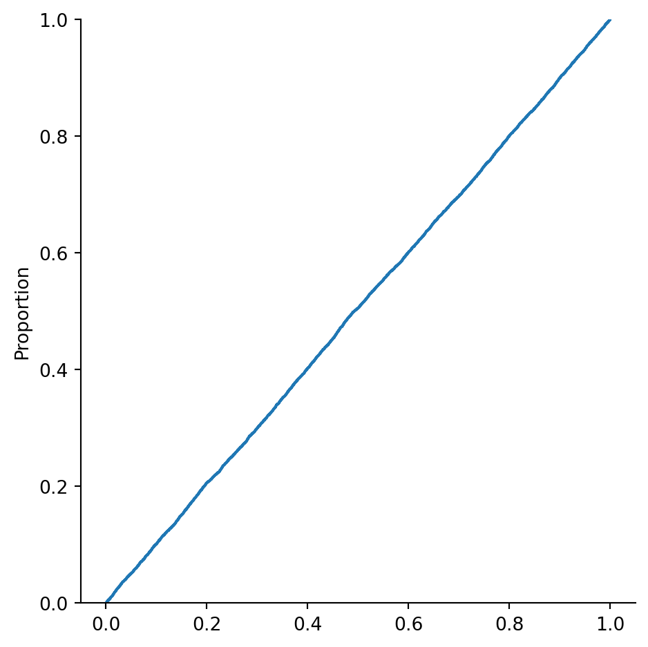

import seaborn as sns2 Descriptive statistics
\[ \newcommand{\float}{\mathbb{F}} \newcommand{\real}{\mathbb{R}} \newcommand{\complex}{\mathbb{C}} \newcommand{\nat}{\mathbb{N}} \newcommand{\integer}{\mathbb{Z}} \newcommand{\bfa}{\mathbf{a}} \newcommand{\bfe}{\mathbf{e}} \newcommand{\bfh}{\mathbf{h}} \newcommand{\bfp}{\mathbf{p}} \newcommand{\bfq}{\mathbf{q}} \newcommand{\bfu}{\mathbf{u}} \newcommand{\bfv}{\mathbf{v}} \newcommand{\bfw}{\mathbf{w}} \newcommand{\bfx}{\mathbf{x}} \newcommand{\bfy}{\mathbf{y}} \newcommand{\bfz}{\mathbf{z}} \newcommand{\bfA}{\mathbf{A}} \newcommand{\bfW}{\mathbf{W}} \newcommand{\bfX}{\mathbf{X}} \newcommand{\bfzero}{\boldsymbol{0}} \newcommand{\bfmu}{\boldsymbol{\mu}} \newcommand{\TP}{\text{TP}} \newcommand{\TN}{\text{TN}} \newcommand{\FP}{\text{FP}} \newcommand{\FN}{\text{FN}} \newcommand{\rmn}[2]{\mathbb{R}^{#1 \times #2}} \newcommand{\dd}[2]{\frac{d #1}{d #2}} \newcommand{\pp}[2]{\frac{\partial #1}{\partial #2}} \newcommand{\norm}[1]{\left\lVert \mathstrut #1 \right\rVert} \newcommand{\abs}[1]{\left\lvert \mathstrut #1 \right\rvert} \newcommand{\twonorm}[1]{\norm{#1}_2} \newcommand{\onenorm}[1]{\norm{#1}_1} \newcommand{\infnorm}[1]{\norm{#1}_\infty} \newcommand{\innerprod}[2]{\langle #1,#2 \rangle} \newcommand{\pr}[1]{^{(#1)}} \newcommand{\diag}{\operatorname{diag}} \newcommand{\sign}{\operatorname{sign}} \newcommand{\dist}{\operatorname{dist}} \newcommand{\simil}{\operatorname{sim}} \newcommand{\ee}{\times 10^} \newcommand{\floor}[1]{\lfloor#1\rfloor} \newcommand{\argmin}{\operatorname{argmin}} \newcommand{\E}[1]{\operatorname{\mathbb{E}}\left[\mathstrut #1\right]} \newcommand{\Cov}{\operatorname{Cov}} \newcommand{\logit}{\operatorname{logit}} \]
When confronted with a new dataset, it’s crucial to get a sense of its characteristics before attempting to draw conclusions or predictions from it.
One of the fastest ways to become familiar with a data set is to visualize it. Python has many graphics packages with different niches. The most widespread is Matplotlib, which is fairly low-level in the sense that you must explicitly specify most aspects of how the plots will look.
We will make extensive use of seaborn, which is built on top of Matplotlib. It’s meant to be used at a higher level, i.e., letting you describe what you want to see and making it look pretty good. (It is possible to customize seaborn plots using Matplotlib commands, but we won’t need much of that.)
There are three major plot types within seaborn:
displot- How values of a single variable are distributed.
catplot- How categorical values are distributed within and across categories.
relplot- How values of two variables are related to each other.
2.1 Summary statistics
We will use data about car fuel efficiency for illustrations.
cars = sns.load_dataset("mpg")The describe method of a data frame gives summary statistics for each column of quantitative data:
cars.describe()| mpg | cylinders | displacement | horsepower | weight | acceleration | model_year | |
|---|---|---|---|---|---|---|---|
| count | 398.000000 | 398.000000 | 398.000000 | 392.000000 | 398.000000 | 398.000000 | 398.000000 |
| mean | 23.514573 | 5.454774 | 193.425879 | 104.469388 | 2970.424623 | 15.568090 | 76.010050 |
| std | 7.815984 | 1.701004 | 104.269838 | 38.491160 | 846.841774 | 2.757689 | 3.697627 |
| min | 9.000000 | 3.000000 | 68.000000 | 46.000000 | 1613.000000 | 8.000000 | 70.000000 |
| 25% | 17.500000 | 4.000000 | 104.250000 | 75.000000 | 2223.750000 | 13.825000 | 73.000000 |
| 50% | 23.000000 | 4.000000 | 148.500000 | 93.500000 | 2803.500000 | 15.500000 | 76.000000 |
| 75% | 29.000000 | 8.000000 | 262.000000 | 126.000000 | 3608.000000 | 17.175000 | 79.000000 |
| max | 46.600000 | 8.000000 | 455.000000 | 230.000000 | 5140.000000 | 24.800000 | 82.000000 |
We now discuss the definitions and interpretations of these values.
2.1.1 Mean and spread
You may already know the Big Three summary statistics:
Definition 2.1 Given data values \(x_1,\ldots,x_n\), their mean is \[ \mu = \frac{1}{n}\sum_{i=1}^n x_i, \tag{2.1}\] their variance is \[ \sigma^2 = \frac{1}{n}\sum_{i=1}^n (x_i - \mu)^2, \tag{2.2}\] and their standard deviation (STD) is \(\sigma\), the square root of the variance.
Mean is a measurement of central tendency. Variance and STD are measures of spread or dispersion in the data.
Example 2.1 Suppose that \(x_1=0\), \(x_2=t\), and \(x_3=-t\), where \(|t| \le 6\). What are the minimum and maximum possible values of the standard deviation?
Solution. The mean is \(\mu=0\), hence \[ \sigma^2 = \frac{1}{3}\left[ 0^2 + t^2 + (-t)^2 \right] = \frac{2}{3} t^2. \] From this we conclude \[ \sigma = \sqrt{\tfrac{2}{3}} |t|. \] Given that \(0 \le |t| \le 6\), we see that the minimum value of \(\sigma\) is 0 and the maximum is \(2\sqrt{6}\).
Note
Variance is in units that are the square of the data, which can be harder to interpret than STD, which has units the same as the data values.
2.1.2 z-scores
Given data values \(x_1,\ldots,x_n\), we can define related values known as standardized scores or z-scores:
\[ z_i = \frac{x_i-\mu}{\sigma}, \qquad i=1,\ldots,n. \]
The z-scores have mean zero and standard deviation equal to 1; in physical terms, they are dimensionless. That is, the results don’t depend on the physical units chosen to express the data. Converting data into z-scores is referred to as standardization, and it helps make operations uniform across different datasets.
Theorem 2.1 The z-scores have mean equal to zero and variance equal to 1.
Proof. Direct calculations.
Example 2.2 Continuing with the values from Example 2.1, we assume without losing generality that \(t\ge 0\). (Otherwise, we can just swap \(x_2\) and \(x_3\).) Then we have the z-scores \[ z_1 = \frac{0-0}{2t\sqrt{6}} = 0, \quad z_2 = \frac{t-0}{2t\sqrt{6}} = \frac{1}{2\sqrt{6}} \quad z_3 = \frac{-t-0}{2t\sqrt{6}} = \frac{-1}{2\sqrt{6}}. \] These are independent of \(t\), which just scales the original values.
Example 2.3 We can write a little function to compute z-scores in Python:
def standardize(x):
return (x - x.mean()) / x.std()
cars["mpg_z"] = standardize( cars["mpg"] )
cars[ ["mpg", "mpg_z"] ].describe()| mpg | mpg_z | |
|---|---|---|
| count | 398.000000 | 3.980000e+02 |
| mean | 23.514573 | 1.071170e-16 |
| std | 7.815984 | 1.000000e+00 |
| min | 9.000000 | -1.857037e+00 |
| 25% | 17.500000 | -7.695221e-01 |
| 50% | 23.000000 | -6.583596e-02 |
| 75% | 29.000000 | 7.018217e-01 |
| max | 46.600000 | 2.953617e+00 |
Caution
Since floating-point values are rounded off, it’s unlikely that a value derived from them that is meant to be zero will actually be exactly zero. Above, the mean value of about \(-10^{-15}\) should be seen as reasonable for values that have been rounded off in the 15th digit or so.
2.1.3 Populations and samples
In statistics one refers to the population as the entire universe of available values. Thus, the ages of adult on Earth at some instant has a particular population mean and standard deviation. However, in order to estimate those values, we can only measure a sample of the population directly.
When Equation 2.1 is used to compute the mean of a sample rather than a population, we change the notation a bit as a reminder: \[ \bar{x} = \frac{1}{n}\sum_{i=1}^n x_i. \tag{2.3}\]
It can be proved that the sample mean is an accurate way to estimate the population mean, in the following precise sense. If, in a thought experiment, we could average \(\bar{x}\) over all possible samples of size \(n\), the result would be exactly the population mean \(\mu\). That is, we say that \(\bar{x}\) is an unbiased estimator for \(\mu\).
The sample mean in turn can be used within Equation 2.2 to compute sample variance: \[ s_n^2 = \frac{1}{n}\sum_{i=1}^n (x_i - \bar{x})^2. \]
However, sample variance is more subtle than the sample mean. If \(s_n^2\) is averaged over all possible sample sets, we do not get the population variance \(\sigma^2\); hence, \(s_n^2\) is called a biased estimator of the population variance.
An unbiased estimator for \(\sigma^2\) is
\[ s_{n-1}^2 = \frac{1}{n-1}\sum_{i=1}^n (x_i - \bar{x})^2. \tag{2.4}\]
Example 2.4 The values [1, 4, 9, 16, 25] have mean \(\bar{x}=55/5 = 11\). The sample variance is
\[ \begin{split} s_n^2 &= \frac{(1-11)^2+(4-11)^2+(9-11)^2+(16-11)^2+(25-11)^2}{5} \\ & = \frac{374}{5} = 74.8. \end{split} \]
By contrast, the unbiased estimate of population variance from this sample is
\[ s_{n-1}^2 = \frac{374}{4} = 93.5. \]
As you can see from the formulas and the example, the sample variance is always too large as an estimator, but the difference vanishes as the sample size \(n\) increases.
Warning
Sources are not always clear about this terminology. Some use sample variance to mean \(s_{n-1}^2\), not \(s_n^2\), and many even omit the subscripts. You always have to check each source.
Caution
NumPy computes the biased estimator of variance by default, while pandas computes the unbiased version. Whee! Fortunately, most datasets today have large enough \(n\) to make the difference negligible.
For standard deviation, neither \(s_n\) nor \(s_{n-1}\) is an unbiased estimator of \(\sigma\). There is no simple correction that works for all distributions. Our practice is to use \(s_{n-1}\), which is what std computes in pandas. Thus, for instance, a sample z-score for \(x_i\) is
\[ z_i = \frac{x_i-\bar{x}}{s_{n-1}}. \tag{2.5}\]
2.1.4 Median and quantiles
Mean and variance are not the most relevant summary statistics for every dataset. There are important alternatives.
Definition 2.2 For any \(0 < p < 1\), the \(100p\)-percentile or quantile is the value of \(x\) such that \(p\) is the probability of observing a population value less than or equal to \(x\).
The 50th percentile is known as the median of the population.
Note
Some sources reserve the term quantile for another meaning, but since pandas offers quantile to compute percentiles, we don’t draw a distinction.
The unbiased sample median of \(x_1,\ldots,x_n\) can be computed by sorting the values into \(y_1,\ldots,y_n\). If \(n\) is odd, then \(y_{(n+1)/2}\) is the sample median; otherwise, the average of \(y_{n/2}\) and \(y_{1+(n/2)}\) is the sample median.
Example 2.5 If the sorted values are \(1,3,3,4,5,5,5\), then \(n=7\) and the sample median is \(y_4=4\). If the sample values are \(1,3,3,4,5,5,5,9\), then \(n=8\) and the sample median is \((4+5)/2=4.5\).
Computing unbiased sample estimates of percentiles other than the median is complicated, and we won’t go into the details. For large datasets, the sample values are good estimators in practice.
Example 2.6 Here we find the 90th percentile of the loan_amnt variable in the loans dataset:
import pandas as pd
loans = pd.read_csv("_datasets/loan.csv")
x = loans["loan_amnt"]
pct90 = x.quantile(0.9)
print(pct90)22000.0Equivalently, 90 percent of the values are no greater than that value:
sum(x <= pct90) / len(x)0.9008233250245486The 50th percentile is the same thing as the median:
print(x.median())
print(x.quantile(0.50))10000.0
10000.0Definition 2.3 The 25th, 50th, and 75th percentiles are the first, second, and third quartiles of the distribution. The interquartile range (IQR) is the difference between the 75th percentile and the 25th percentile.
Sometimes the definition above is extended to the zeroth quartile, which is the minimum sample value, and the fourth quartile, which is the maximum sample value.
IQR is an indication of the spread of the values. For some distributions, the median and IQR might be a good substitute for the mean and standard deviation.
Example 2.7 The dataframe describe method includes mean, standard deviation, and the quartiles:
x.describe()count 39717.000000
mean 11219.443815
std 7456.670694
min 500.000000
25% 5500.000000
50% 10000.000000
75% 15000.000000
max 35000.000000
Name: loan_amnt, dtype: float64It’s easy to write a function to compute the IQR of a series:
def IQR(x):
Q25, Q75 = x.quantile( [0.25, 0.75] )
return Q75 - Q25
IQR(x)9500.02.2 Distributions
Mean and STD, or median and IQR, attempt to summarize quantitative data with a couple of numbers. At the other extreme, we can express the distribution of all values precisely using a function.
2.2.1 CDF
Definition 2.4 The cumulative distribution function (CDF) of a population is the function \[ F(t) = \text{fraction of the population that is $\le t$}, \] where \(t\) ranges over all possible values.
Note that by its definition, \(F\) ranges between 0 and 1 (inclusive) and is a nondecreasing function.
Example 2.8 If a population is \(x_i=i\) for \(i=1,\ldots,n\), then \(F(k)=k/n\) at each \(k=1,\ldots,n\). We could, however, also regard \(F\) as a function of a continuous variable \(t\), in which case \[ F(t) = \frac{\lfloor t \rfloor}{n}, \] where \(\lfloor\cdot\rfloor\) is the floor function that rounds leftward to the nearest integer. This produces a step function that looks like stairs going up from 0 to 1.
Example 2.8 becomes interesting as a template for generalizing to infinite populations. If we take not \(x_i=i\) but \(x_i=i/n\) and then let \(n\to \infty\), then the graph of \(F\) converges to \[ F(t) = \begin{cases} 0, & t < 0, \\ t,& 0 \le t \le 1, \\ 1,& t > 1. \end{cases} \tag{2.6}\] While it doesn’t make sense to think about a fraction of the number of values in the infinite case, we can interpret \(F(t)\) as the *probability of observing a value less than or equal to the real number \(t\).
Definition 2.5 A uniform distribution gives an equal probability to every value. In particular, the uniform distribution over the interval \([0,1]\) has the CDF given in Equation 2.6.
2.2.2 Random numbers in Python
Generating truly random numbers on a computer is not simple. We rely on pseudorandom numbers, which are generated by deterministic functions called random number generators (RNGs) that have extremely long periods. One consequence is repeatability: by specifying the starting state of the RNG, you can get exactly the same pseudorandom sequence every time.
Caution
There is an older way to use random numbers in NumPy than the one presented here. You’ll still find it on the web and in some books, but the newer way is recommended.
Example 2.9 We start by creating an RNG with a specific state. Every time this code is run, the same sequence of numbers will be generated from it.
from numpy.random import default_rng
rng = default_rng(19716) # setting an initial stateThe uniform generator method produces numbers distributed uniformly between two limits you specify.
for _ in range(5):
print( rng.uniform( -1, 1 ) )0.9516875346510687
0.3153947867339544
-0.6651579991995873
0.42925720152795055
0.9607625414805052.2.3 Empirical CDF
Given a sample of a population, we can always calculate the analog of a CDF from its values.
Definition 2.6 The empirical cumulative distribution function or ECDF of a sample is the function \(\hat{F}\) whose value at \(t\) equals the proportion of the sample values that are less than or equal to \(t\).
Example 2.10 Here is an experiment that producing the ECDF for a sample from the random number generator:
from numpy.random import default_rng
rng = default_rng(19716)
x = rng.uniform( size=(100,) )
sns.displot(x, kind="ecdf");
If we take more samples, we expect to see a curve closer to the theoretical CDF, \(F(t)=t\):
x = rng.uniform( size=(4000,) )
sns.displot(x, kind="ecdf");
2.2.4 PDF
By definition, we know that if \(a<b\), \(\hat{F}(b) - \hat{F}(a)\) is the number of observations in the half-open interval \((a,b]\). This leads into the next definition.
Definition 2.7 Select the ordered values \(t_1 < t_2 < \cdots < t_m\), called edges, and define bins as the intervals \[ B_k = (t_k,t_{k+1}], \qquad k=0,\ldots,m, \] where we adopt the convention that \(t_0=-\infty\) and \(t_{m+1}=\infty\). Let \(c_k\) be the number of data values in \(B_k\). Then a histogram relative to the bins is the list of \((B_0,c_0),\ldots,(B_m,c_m)\).
The default for a seaborn displot is to show a histogram.
Example 2.11 Continuing with the uniform distribution over \([0,1]\):
x = rng.uniform( size=(1000,) )
sns.displot(x);We can choose the number of bins to use, or give a vector of their edges:
sns.displot(x, bins=40);
Again something interesting happens in a limiting case. If we normalize the count in a bin by the length of that bin, we get \[ \frac{c_k}{t_{k+1}-t_k} = \frac{\hat{F}(t_{k+1})-\hat{F}(t_k)}{t_{k+1}-t_k}. \tag{2.7}\] If we let the number of observations tend to infinity, then \(\hat{F}\) will converge to \(F\), and if we also let the number of bins go to infinity, then the fraction in Equation 2.7 converges to \(F'(t_k)\).
Definition 2.8 The probability density function or PDF of a distribution is the derivative of the CDF.
Example 2.12 If we have many samples, then we can use a normalized histogram to give an approximation of the PDF:
x = rng.uniform( size=(20000,) )
sns.displot(x, bins=24, stat="density");
Alternatively, we can use process called kernel density estimation to plot a continuous estimate of the PDF:
sns.displot(x, kind="kde");
In this case we did not obtain a particularly good approximation of the true PDF. In part this is because kernel density estimation assumes that the PDF is continuous, but here it is 1 over \([0,1]\) and jumps down to 0 elsewhere.
2.2.5 Mean and variance
It’s possible to compute the mean and variance (thus STD) of a distribution from its PDF: \[ \begin{split} \mu &= \int x f(x) \, dx \\ \sigma^2 &= \int (x-\mu)^2 f(x) \, dx, \end{split} \] where the integrals are taken over the domain of \(f\).
Example 2.13 The uniform distribution over \([0,1]\) has \(f(x)=1\) over that interval. Hence, \[ \begin{split} \mu &= \int_0^1 x \, dx = \left[ \frac{1}{2} x^2\right]_0^1 = \frac{1}{2}, \\ \sigma^2 &= \int_0^1 \left(x-\tfrac{1}{2}\right)^2 \, dx = \frac{1}{3} - \frac{1}{2} + \frac{1}{4} = \frac{1}{12}. \end{split} \]
Let’s check these results empirically:
from numpy.random import default_rng
import numpy as np
rng = default_rng(19716)
x = rng.uniform( size=(2000,) )
print(f"µ = {np.mean(x):.5f}, 12σ² = {12*np.var(x):.5f}")µ = 0.50518, 12σ² = 1.000192.2.6 Normal distribution
Next to perhaps the uniform distribution, the following is the most widely used distribution of a random variable.
Definition 2.9 The normal distribution or Gaussian distribution with mean \(\mu\) and variance \(\sigma^2\) is defined by the PDF \[ f(x) = \frac{1}{\sigma \sqrt{2\pi}} e^{ -(x-\mu)^2/(2\sigma^2)}. \tag{2.8}\] The standard normal distribution uses \(\mu=0\) and \(\sigma=1\).
For data that are distributed normally, about 68% of the values lie within one standard deviation of the mean, and 95% lie within two standard deviations.
Example 2.14 The normal method of a NumPy RNG simulates a standard normal distribution.
rng = default_rng(19716)
x = rng.normal( size=(10000,) )
sns.displot(x, bins=np.linspace(-4, 4, 28), stat="probability");We can change the variance by multiplying by \(\sigma\) and change the mean by adding \(\mu\):
df = pd.DataFrame( {"x": x, "3x-10": 3*x-10} )
df.describe()| x | 3x-10 | |
|---|---|---|
| count | 10000.000000 | 10000.000000 |
| mean | -0.012414 | -10.037242 |
| std | 0.993568 | 2.980704 |
| min | -3.436924 | -20.310773 |
| 25% | -0.672352 | -12.017056 |
| 50% | -0.008374 | -10.025122 |
| 75% | 0.659730 | -8.020809 |
| max | 4.044099 | 2.132297 |
The KDE density estimator works pretty well for normally distributed data, except in the tails where there are few observations:
sns.displot(data=df, x="3x-10", kind="kde");
2.3 Grouping data
Here is the distribution of the mpg variable in cars over the entire dataset:
sns.displot(data=cars, x="mpg", bins=20);It’s often useful to analyze the data in groups defined by categorical values or other criteria. For instance, does the distribution of the mpg variable look the same regardless of where the cars were made? Both seaborn and pandas make investigating this kind of question much more easily and efficiently than hand-written code can do.
2.3.1 Facet, box, and violin plots
In a facet plot, a distribution plot is repeated across columns or rows for each group.
Example 2.15 Suppose we want to separate the cars data by the origin categorical column, which has 3 unique values:
cars["origin"].value_counts()usa 249
japan 79
europe 70
Name: origin, dtype: int64We can tell seaborn to group by origin and apply different colors to each group using the hue keyword in a displot, or distribution plot:
sns.displot(data=cars, x="mpg", hue="origin");
The above graph is a little hard to interpret because of the overlaps. We can instead plot the groups in separate columns in a facet plot:
sns.displot(data=cars,
x="mpg", col="origin", height=2.2
);
From the facet plot it is clear that the U.S.A. cars are more clustered on the left (smaller MPG) than are the Japanese and European cars.
Other ways to visualize grouped data are offered by the catplot function in seaborn, including the well-known box plot and violin plot.
Example 2.16 Here is a grouped box plot for mpg:
sns.catplot(data=cars,
x="origin", y="mpg", kind="box"
);
Each colored box shows the interquartile range, with the interior horizontal line showing the median. The whiskers and dots are explained in a later section. A related visualization is a violin plot:
sns.catplot(data=cars,
x="mpg", y="origin",
kind="violin"
);
In a violin plot, the inner lines show the same information as the box plot, with the thick part showing the IQR, while the sides of the “violins†are KDE estimates of the density functions.
It’s also possible to make groups using a quantitative variable. The pandas cut method lets you define ranges that serve as bins:
cuts = pd.cut(
cars["weight"], # series to cut by
range(1500, 5800, 1000) # bin edges
)
cars["cuts"] = cuts
cars.head(6)| mpg | cylinders | displacement | horsepower | weight | acceleration | model_year | origin | name | mpg_z | cuts | |
|---|---|---|---|---|---|---|---|---|---|---|---|
| 0 | 18.0 | 8 | 307.0 | 130.0 | 3504 | 12.0 | 70 | usa | chevrolet chevelle malibu | -0.705551 | (3500, 4500] |
| 1 | 15.0 | 8 | 350.0 | 165.0 | 3693 | 11.5 | 70 | usa | buick skylark 320 | -1.089379 | (3500, 4500] |
| 2 | 18.0 | 8 | 318.0 | 150.0 | 3436 | 11.0 | 70 | usa | plymouth satellite | -0.705551 | (2500, 3500] |
| 3 | 16.0 | 8 | 304.0 | 150.0 | 3433 | 12.0 | 70 | usa | amc rebel sst | -0.961437 | (2500, 3500] |
| 4 | 17.0 | 8 | 302.0 | 140.0 | 3449 | 10.5 | 70 | usa | ford torino | -0.833494 | (2500, 3500] |
| 5 | 15.0 | 8 | 429.0 | 198.0 | 4341 | 10.0 | 70 | usa | ford galaxie 500 | -1.089379 | (3500, 4500] |
sns.catplot(data=cars,
x="mpg", y="cuts",
kind="violin"
);
2.3.2 Aggregation
In pandas, the groupby method splits a data frame into groups based on values in a designated column. These groups can then be passed through aggregators that reduce each grouped column to a single value. A list of the most common predefined aggregation functions is given in Table 2.1.
| method | effect |
|---|---|
count |
Number of values in each group |
mean |
Mean value in each group |
sum |
Sum within each group |
std, var |
Standard deviation/variance within groups |
min, max |
Min or max within groups |
describe |
Descriptive statistics |
first, last |
First or last of group values |
Example 2.17 Here is how we can define groups based on the categorical origin column:
cars.groupby("origin")<pandas.core.groupby.generic.DataFrameGroupBy object at 0x17fd04690>As you can see from the output above, a grouped data frame isn’t of much value until you apply some operation to it. For instance, we can find the mean of each quantitative column:
cars.groupby("origin").mean()| mpg | cylinders | displacement | horsepower | weight | acceleration | model_year | mpg_z | |
|---|---|---|---|---|---|---|---|---|
| origin | ||||||||
| europe | 27.891429 | 4.157143 | 109.142857 | 80.558824 | 2423.300000 | 16.787143 | 75.814286 | 0.559988 |
| japan | 30.450633 | 4.101266 | 102.708861 | 79.835443 | 2221.227848 | 16.172152 | 77.443038 | 0.887420 |
| usa | 20.083534 | 6.248996 | 245.901606 | 119.048980 | 3361.931727 | 15.033735 | 75.610442 | -0.438977 |
The result is a frame indexed by origin and whose columns contain the group means. If we want to focus on just mpg from the dataset, we can extract that column after the grouping (which needs to know origin) but before operating on the groups:
cars.groupby("origin")["mpg"].mean()origin
europe 27.891429
japan 30.450633
usa 20.083534
Name: mpg, dtype: float64A lot of pandas expressions end up as compound statements like the one above. It’s equivalent to a sequence of assignments to temporary names:
by_origin = cars.groupby("origin")
mpg_by_origin = by_origin["mpg"]
mpg_by_origin.mean()origin
europe 27.891429
japan 30.450633
usa 20.083534
Name: mpg, dtype: float64When you encounter a compound statement in pandas, just interpret it step by step, from left to right.
Here we define bins for the weights and find the max of mpg within each bin:
cuts = pd.cut(cars["weight"], range(1500, 5800, 1000))
by_weight = cars.groupby(cuts)
by_weight["mpg"].max()weight
(1500, 2500] 46.6
(2500, 3500] 38.0
(3500, 4500] 26.6
(4500, 5500] 16.0
Name: mpg, dtype: float64If you want an aggregator other than those in Table 2.1, you can call agg with your own function:
def iqr(x):
q1, q3 = x.quantile( [.25, .75] )
return q3 - q1
by_weight["mpg"].agg(iqr)weight
(1500, 2500] 8.450
(2500, 3500] 6.325
(3500, 4500] 3.125
(4500, 5500] 1.000
Name: mpg, dtype: float642.3.3 Transformation
A transformation applies a function to each element of a column, producing a result of the same length that can be indexed the same way. This transformation is applied group by group.
Example 2.18 We can convert the mpg values to z-scores using the population mean and variance:
def standardize(x):
return (x - x.mean()) / x.std()
cars["mpg_z"] = standardize(cars["mpg"])
sns.displot(data=cars,
x="mpg_z",
col="origin", height=2.3
);Above, each of the distributions is shifted and scaled identically. The result is identical to the facet plot in Example 2.15 except for relabeled \(x\)-axes. Instead, we could standardize mpg to z-scores within groups separately, so that each group is shifted and scaled independently:
cars["group_mpg_z"] = by_weight["mpg"].transform(standardize)
sns.displot(data=cars,
x="group_mpg_z",
col="origin", height=2.3
);(Another reason the second set of plots looks different is that the histogram bins are chosen differently.)
2.3.4 Filtering
A filter is a function that operates on a column and returns either True, meaning to keep the column, or False, meaning to reject it. This filter may be applied to a grouped frame.
Example 2.19 Suppose we want to group cars by horsepower, but we find out that some of the groups don’t have a lot of members:
cuts = pd.cut(cars["horsepower"], range(40, 220, 20))
by_hp = cars.groupby(cuts)
by_hp["mpg"].count()horsepower
(40, 60] 20
(60, 80] 99
(80, 100] 123
(100, 120] 48
(120, 140] 25
(140, 160] 40
(160, 180] 20
(180, 200] 7
Name: mpg, dtype: int64Since small groups can give misleading statistics, we can filter out the groups with fewer than, say, 30 members:
def keeper(x):
return len(x) > 29
hp_30 = by_hp.filter(keeper)
hp_30.head()| mpg | cylinders | displacement | horsepower | weight | acceleration | model_year | origin | name | mpg_z | cuts | group_mpg_z | |
|---|---|---|---|---|---|---|---|---|---|---|---|---|
| 2 | 18.0 | 8 | 318.0 | 150.0 | 3436 | 11.0 | 70 | usa | plymouth satellite | -0.705551 | (2500, 3500] | -0.956484 |
| 3 | 16.0 | 8 | 304.0 | 150.0 | 3433 | 12.0 | 70 | usa | amc rebel sst | -0.961437 | (2500, 3500] | -1.377177 |
| 11 | 14.0 | 8 | 340.0 | 160.0 | 3609 | 8.0 | 70 | usa | plymouth 'cuda 340 | -1.217322 | (3500, 4500] | -0.611515 |
| 12 | 15.0 | 8 | 400.0 | 150.0 | 3761 | 9.5 | 70 | usa | chevrolet monte carlo | -1.089379 | (3500, 4500] | -0.249252 |
| 14 | 24.0 | 4 | 113.0 | 95.0 | 2372 | 15.0 | 70 | japan | toyota corona mark ii | 0.062107 | (1500, 2500] | -1.130768 |
The result is a single, ungrouped frame in which the members of all groups that failed the filter were removed. Thus, the horsepower column has no values left less than 60 or greater than 160:
hp_30["horsepower"].describe()count 310.000000
mean 95.309677
std 25.298367
min 61.000000
25% 75.000000
50% 90.000000
75% 105.000000
max 160.000000
Name: horsepower, dtype: float64
2.4 Outliers
Informally, an outlier is a data value that is considered to be far from typical. In some applications, such as detecting earthquakes or cancer, outliers are the cases of real interest. But we will be thinking of them as unwelcome values that might result from equipment failure, confounding effects, mistyping a value, using an extreme value to represent missing data, and so on. In such cases we want to minimize the effect of the outliers on the statistics.
It is well known, for instance, that the mean is more sensitive to outliers than the median is.
Example 2.20 The values \(1,2,3,4,5\) have a mean and median both equal to 3. If we change the largest value to be a lot larger, say \(1,2,3,4,1000\), then the mean changes to 202. But the median is still 3!
If you want to use a method that is vulnerable to outliers, it’s typical to remove such values early on. There are various ways of deciding what qualifies as an outlier, with no one-size recommendation for all applications.
2.4.1 IQR
Let \(Q_{25}\) and \(Q_{75}\) be the first and third quartiles (i.e., 25% and 75% percentiles), and let \(I=Q_{75}-Q_{25}\) be the interquartile range (IQR). Then \(x\) is an outlier value if
\[ x < Q_{25} - 1.5I \text{ or } x > Q_{75} + 1.5I. \tag{2.9}\]
In a box plot, the whiskers growing from a box show the extent of the non-outlier data, and the dots beyond the whiskers represent outliers.
Example 2.21 Let’s look at another data set, based on an fMRI experiment:
fmri = sns.load_dataset("fmri")
fmri.head()| subject | timepoint | event | region | signal | |
|---|---|---|---|---|---|
| 0 | s13 | 18 | stim | parietal | -0.017552 |
| 1 | s5 | 14 | stim | parietal | -0.080883 |
| 2 | s12 | 18 | stim | parietal | -0.081033 |
| 3 | s11 | 18 | stim | parietal | -0.046134 |
| 4 | s10 | 18 | stim | parietal | -0.037970 |
We want to focus on the signal column, splitting according to the event.
by_event = fmri.groupby("event")
by_event["signal"].describe()| count | mean | std | min | 25% | 50% | 75% | max | |
|---|---|---|---|---|---|---|---|---|
| event | ||||||||
| cue | 532.0 | -0.006669 | 0.047752 | -0.181241 | -0.031122 | -0.008871 | 0.015825 | 0.215735 |
| stim | 532.0 | 0.013748 | 0.123179 | -0.255486 | -0.062378 | -0.022202 | 0.058143 | 0.564985 |
Here is a box plot of the signal for these groups.
sns.catplot(data=fmri,
x="event", y="signal",
kind="box"
);The dots lying outside the whiskers in the plot can be considered outliers satisfying one of the inequalities in Equation 2.9.
Let’s now remove the outliers. We start with a function that computes a Boolean-valued series for a given input. This function is applied as a transform to the data as grouped by events:
def is_outlier(x):
Q25, Q75 = x.quantile([.25,.75])
I = Q75 - Q25
return (x < Q25 - 1.5*I) | (x > Q75 + 1.5*I)
outliers = by_event["signal"].transform(is_outlier)
fmri.loc[outliers,"event"].value_counts()stim 40
cue 26
Name: event, dtype: int64You can see above that there are 66 outliers. To negate the outlier indicator, we can use ~outs as a row selector.
cleaned = fmri[~outliers]The median values are barely affected by the omission of the outliers:
print( "medians with outliers:" )
print( by_event["signal"].median() )
print( "\nmedians without outliers:" )
print( cleaned.groupby("event")["signal"].median() )medians with outliers:
event
cue -0.008871
stim -0.022202
Name: signal, dtype: float64
medians without outliers:
event
cue -0.009006
stim -0.028068
Name: signal, dtype: float64The means, though, show much greater change:
print( "means with outliers:" )
print( by_event["signal"].mean() )
print( "\nmeans without outliers:" )
print( cleaned.groupby("event")["signal"].mean() )means with outliers:
event
cue -0.006669
stim 0.013748
Name: signal, dtype: float64
means without outliers:
event
cue -0.008243
stim -0.010245
Name: signal, dtype: float64For the stim case in particular, the mean value changes by almost 200%, including a sign change. (Relative to the standard deviation, it’s closer to a 20% change.)
2.4.2 Mean and STD
For normal distributions, values more than twice the standard deviation \(\sigma\) from the mean could be considered to be outliers; this would exclude 5% of the values, on average. A less aggressive criterion is to allow a distance of \(3\sigma\), which excludes only about 0.3% of the values. The IQR criterion above corresponds to about \(2.7\sigma\) in the normal distribution case.
Note
A criticism of classical statistics is that much of it is conditioned on the assumption of normal distributions. This assumption is often violated by real datasets; quantities that depend on normality should be used judiciously.
Example 2.22 The following plot shows the outlier cutoffs for 2000 samples from a normal distribution, using the criteria for 2σ (red), 3σ (blue), and 1.5 IQR (black).
Code
import matplotlib.pyplot as plt
from numpy.random import default_rng
randn = default_rng(1).normal
x = pd.Series(randn(size=2000))
sns.displot(data=x,bins=30);
m,s = x.mean(),x.std()
plt.axvline(m-2*s,color='r')
plt.axvline(m+2*s,color='r')
plt.axvline(m-3*s,color='b')
plt.axvline(m+3*s,color='b')
q1,q3 = x.quantile([.25,.75])
plt.axvline(q3+1.5*(q3-q1),color='k')
plt.axvline(q1-1.5*(q3-q1),color='k');For asymmetric distributions, or those with a heavy tail, these criteria might show greater differences.
2.5 Correlation
There are often variables that we believe to be linked, either because one influences the other, or because both are influenced by some other factor. In either case, we say the quantities are correlated.
There are several ways to measure correlation. It’s good practice to look at the data first, though, before jumping to the numbers.
2.5.1 Relational plots
Thus far, we have used displot, or “distribution plot”, to make histograms, and catplot, or “categorical plot”, to make box and violin plots. The third major plot type in seaborn is relplot, or “relational plot”, to show the relationships between variables.
Example 2.23 By default, relplot makes a scatter plot of two different variables:
sns.relplot(data=cars, x="model_year", y="mpg");
Like in the other plot types, we can use hue (color) and marker size to indicate groups within the data:
sns.relplot(data=cars,
x="model_year", y="mpg",
hue="origin", size="weight",
);
If we want to emphasize a trend rather than the individual data values, we can instead plot the average value at each \(x\) with error bars:
sns.relplot(data=cars,
x="model_year", y="mpg",
kind="line", errorbar="sd"
);
The error ribbon above is drawn at one standard deviation around the mean.
In order to see multiple pairwise scatter plots in one shot, we can use pairplot in seaborn:
columns = [ "mpg", "horsepower",
"displacement", "origin" ]
sns.pairplot(data=cars[columns],
hue="origin", height=2
);
The panels along the diagonal show each quantitative variable’s PDF. The other panels show scatter plots putting one pair at a time of the variables on the coordinate axes.
2.5.2 Covariance
Definition 2.10 Suppose we have two series of observations, \([x_i]\) and \([y_i]\), representing observations of random quantities \(X\) and \(Y\) having means \(\mu_X\) and \(\mu_Y\). Their covariance is defined as \[ \Cov(X,Y) = \frac{1}{n} \sum_{i=1}^n (x_i-\mu_X)(y_i-\mu_Y). \]
Note that the values \(x_i-\mu_X\) and \(y_i-\mu_Y\) are deviations from the means. It follows from the definitions that \[ \begin{split} \Cov(X,X) &= \sigma_X^2, \\ \Cov(Y,Y) &= \sigma_Y^2, \end{split} \] i.e., self-covariance is simply variance.
Covariance is not easy to interpret. Its units are the products of the units of the two variables, and it is sensitive to rescaling the variables (e.g., grams versus kilograms).
2.5.3 Pearson coefficient
We can remove the dependence on units and scale by applying the covariance to standardized scores for both variables. The following is the best-known measure of correlation.
Definition 2.11 For the populations of \(X\) and \(Y\), the Pearson correlation coefficient is \[ \begin{split} \rho(X,Y) &= \frac{1}{n} \sum_{i=1}^n \left(\frac{x_i-\mu_X}{\sigma_X}\right)\left(\frac{y_i-\mu_Y}{\sigma_Y}\right) \\ & = \frac{\Cov(X,Y)}{\sigma_X\sigma_Y}, \end{split} \tag{2.10}\] where \(\sigma_X^2\) and \(\sigma_Y^2\) are the population variances of \(X\) and \(Y\).
For samples from the two populations, we use \[ r_{xy} = \frac{\sum_{i=1}^n (x_i-\bar{x}) (y_i-\bar{y})}{\sqrt{\sum_{i=1}^n (x_i-\bar{x})^2}\,\sqrt{\sum_{i=1}^n (y_i-\bar{y})^2}}, \tag{2.11}\] where \(\bar{x}\) and \(\bar{y}\) are sample means.
Both \(\rho_{XY}\) and \(r_{xy}\) are between \(-1\) and \(1\), with the endpoints indicating perfect correlation (inverse or direct).
An equivalent formula for \(r_{xy}\) is \[ r_{xy} = \frac{1}{n-1} \sum_{i=1}^n \left(\frac{x_i-\bar{x}}{s_x}\right)\, \left(\frac{y_i-\bar{y}}{s_y}\right), \tag{2.12}\] where the quantities in parentheses are z-scores.
Example 2.24 We might reasonably expect horsepower and miles per gallon to be negatively correlated:
sns.relplot(data=cars, x="horsepower", y="mpg");Covariance allows us to quantify the relationship:
cars[ ["horsepower", "mpg"] ].cov()| horsepower | mpg | |
|---|---|---|
| horsepower | 1481.569393 | -233.857926 |
| mpg | -233.857926 | 61.089611 |
But should these numbers considered big? The Pearson coefficient is more easily interpreted:
cars[ ["horsepower", "mpg"] ].corr()| horsepower | mpg | |
|---|---|---|
| horsepower | 1.000000 | -0.778427 |
| mpg | -0.778427 | 1.000000 |
The value of about \(-0.79\) suggests that knowing one of the values would allow us to predict the other one rather well using a best-fit straight line (more on that in a future chapter).
As usual when dealing with means, however, the Pearson coefficient can be sensitive to outlier values.
Example 2.25 The Pearson coefficient of any variable with itself is 1. But let’s correlate two series that differ in only one element: \(0,1,2,\ldots,19\), and the same sequence but with the fifth value replaced by \(-100\):
x = pd.Series( range(20) )
y = x.copy()
y[4] = -100
x.corr(y)0.43636501543147005Despite the change being in a single value, over half of the predictive power was lost.
2.5.4 Spearman coefficient
The Spearman coefficient is one way to lessen the impact of outliers when measuring correlation. The idea is that the values are used only in their orderings.
Definition 2.12 If \(x_1,\ldots,x_n\) is a series of observations, let their sorted ordering be \[ x_{s_1},x_{s_2},\ldots,x_{s_n}. \] Then \(s_1,s_2,\ldots,s_n\) is the rank series of \(\bfx\).
Definition 2.13 The Spearman coefficient of two series of equal length is the Pearson coefficient of their rank series.
Example 2.26 Returning to Example 2.25, we find the Spearman coefficient is barely affected by the single outlier:
x = pd.Series( range(20) )
y = x.copy()
y[4] = -100
x.corr(y,"spearman")0.9849624060150375It’s trivial in this case to produce the two rank series by hand:
s = pd.Series( range(1,21) ) # already sorted
t = s.copy()
t[:5] = [2,3,4,5,1] # modified sort ordering
t.corr(s)0.9849624060150375As long as y[4] is negative, it doesn’t matter what its particular value is:
y[4] = -1000000
x.corr(y,"spearman")0.9849624060150375Since real data almost always features outlying or anomalous values, it’s important to think about the robustness of the statistics you choose.
2.5.5 Categorical correlation
An ordinal variable, such as the days of the week, is often straightforward to quantify as integers. But a nominal variable poses a different challenge.
Example 2.27 Grouped histograms suggest an association between country of origin and MPG:
sns.displot(data=cars, kind="kde",
x="mpg", hue="origin");How can we quantify the association? The first step is to convert the origin column into dummy variables:
dum = pd.get_dummies(cars, columns=["origin"])
dum.head()| mpg | cylinders | displacement | horsepower | weight | acceleration | model_year | name | mpg_z | cuts | group_mpg_z | origin_europe | origin_japan | origin_usa | |
|---|---|---|---|---|---|---|---|---|---|---|---|---|---|---|
| 0 | 18.0 | 8 | 307.0 | 130.0 | 3504 | 12.0 | 70 | chevrolet chevelle malibu | -0.705551 | (3500, 4500] | 0.837535 | 0 | 0 | 1 |
| 1 | 15.0 | 8 | 350.0 | 165.0 | 3693 | 11.5 | 70 | buick skylark 320 | -1.089379 | (3500, 4500] | -0.249252 | 0 | 0 | 1 |
| 2 | 18.0 | 8 | 318.0 | 150.0 | 3436 | 11.0 | 70 | plymouth satellite | -0.705551 | (2500, 3500] | -0.956484 | 0 | 0 | 1 |
| 3 | 16.0 | 8 | 304.0 | 150.0 | 3433 | 12.0 | 70 | amc rebel sst | -0.961437 | (2500, 3500] | -1.377177 | 0 | 0 | 1 |
| 4 | 17.0 | 8 | 302.0 | 140.0 | 3449 | 10.5 | 70 | ford torino | -0.833494 | (2500, 3500] | -1.166831 | 0 | 0 | 1 |
The original origin column has been replaced by three binary indicator columns. Now we can look for correlations between them and mpg:
columns = [
"mpg",
"origin_europe",
"origin_japan",
"origin_usa"
]
dum[columns].corr()| mpg | origin_europe | origin_japan | origin_usa | |
|---|---|---|---|---|
| mpg | 1.000000 | 0.259022 | 0.442174 | -0.568192 |
| origin_europe | 0.259022 | 1.000000 | -0.229895 | -0.597198 |
| origin_japan | 0.442174 | -0.229895 | 1.000000 | -0.643317 |
| origin_usa | -0.568192 | -0.597198 | -0.643317 | 1.000000 |
As you can see from the above, europe and japan are positively associated with mpg, while usa is inversely associated with mpg.

2.6 Cautionary tales
Attaching theorem-supported numbers to real data feels precise and infallible. The theorems do what they say, of course—they’re theorems!—but our intuition can be a little too ready to attach significance to the numbers, causing misconceptions or mistakes. Proper visualizations can help us see through such issues.
2.6.1 The Datasaurus
The Datasaurus Dozen is a collection of datasets that highlights the perils of putting blind trust into summary statistics.
Example 2.28 The Datasaurus is a set of 142 points making a handsome portrait:
dozen = pd.read_csv("_datasets/DatasaurusDozen.tsv", delimiter="\t")
sns.relplot(data=dozen[dozen["dataset"]=="dino"], x="x", y="y");However, there are 12 other datasets that all have roughly the same mean and variance for \(x\) and \(y\), and the same correlations between them:
by_set = dozen.groupby("dataset")
by_set.mean()| x | y | |
|---|---|---|
| dataset | ||
| away | 54.266100 | 47.834721 |
| bullseye | 54.268730 | 47.830823 |
| circle | 54.267320 | 47.837717 |
| dino | 54.263273 | 47.832253 |
| dots | 54.260303 | 47.839829 |
| h_lines | 54.261442 | 47.830252 |
| high_lines | 54.268805 | 47.835450 |
| slant_down | 54.267849 | 47.835896 |
| slant_up | 54.265882 | 47.831496 |
| star | 54.267341 | 47.839545 |
| v_lines | 54.269927 | 47.836988 |
| wide_lines | 54.266916 | 47.831602 |
| x_shape | 54.260150 | 47.839717 |
by_set.std()| x | y | |
|---|---|---|
| dataset | ||
| away | 16.769825 | 26.939743 |
| bullseye | 16.769239 | 26.935727 |
| circle | 16.760013 | 26.930036 |
| dino | 16.765142 | 26.935403 |
| dots | 16.767735 | 26.930192 |
| h_lines | 16.765898 | 26.939876 |
| high_lines | 16.766704 | 26.939998 |
| slant_down | 16.766759 | 26.936105 |
| slant_up | 16.768853 | 26.938608 |
| star | 16.768959 | 26.930275 |
| v_lines | 16.769959 | 26.937684 |
| wide_lines | 16.770000 | 26.937902 |
| x_shape | 16.769958 | 26.930002 |
by_set.corr()| x | y | ||
|---|---|---|---|
| dataset | |||
| away | x | 1.000000 | -0.064128 |
| y | -0.064128 | 1.000000 | |
| bullseye | x | 1.000000 | -0.068586 |
| y | -0.068586 | 1.000000 | |
| circle | x | 1.000000 | -0.068343 |
| y | -0.068343 | 1.000000 | |
| dino | x | 1.000000 | -0.064472 |
| y | -0.064472 | 1.000000 | |
| dots | x | 1.000000 | -0.060341 |
| y | -0.060341 | 1.000000 | |
| h_lines | x | 1.000000 | -0.061715 |
| y | -0.061715 | 1.000000 | |
| high_lines | x | 1.000000 | -0.068504 |
| y | -0.068504 | 1.000000 | |
| slant_down | x | 1.000000 | -0.068980 |
| y | -0.068980 | 1.000000 | |
| slant_up | x | 1.000000 | -0.068609 |
| y | -0.068609 | 1.000000 | |
| star | x | 1.000000 | -0.062961 |
| y | -0.062961 | 1.000000 | |
| v_lines | x | 1.000000 | -0.069446 |
| y | -0.069446 | 1.000000 | |
| wide_lines | x | 1.000000 | -0.066575 |
| y | -0.066575 | 1.000000 | |
| x_shape | x | 1.000000 | -0.065583 |
| y | -0.065583 | 1.000000 |
However, a plot reveals that these sets are, to put it mildly, quite distinct:
others = dozen[ dozen["dataset"] != "dino" ]
sns.relplot(data=others,
x="x", y="y",
col="dataset", col_wrap=3, height=2.2
);
Important
Always plot your data.
Always 👠plot 👠your 👠data!
2.6.2 Correlation vs. dependence
In casual speech, you might expect two variables that are uncorrelated to be unrelated. But that is not at all how the mathematical definitions play out.
Example 2.29 For example, here are \(x\) and \(y\) variables that both depend on a hidden variable \(\theta\):
theta = np.linspace(0,2*np.pi,50)
x = pd.Series(np.cos(theta))
y = pd.Series(np.sin(theta))
sns.relplot(x=x, y=y);
Neither informally nor mathematically would we say that \(x\) and \(y\) are independent! For example, if \(y=0\), then there is only one possible value for \(x\). Yet the correlation between \(x\) and \(y\) is zero:
x.corr(y)8.276095507101827e-18Correlation can only measure the extent of the relationship that is linear; \(x\) and \(y\) lying on a straight line means perfect correlation. In this case, every line you can draw that passes through \((0,0)\) is essentially equally bad at representing the data, and correlation cannot express the relationship.
2.6.3 Simpson’s paradox
The penguin dataset contains a common paradox—or a counterintuitive phenomenon, at least.
Example 2.30 Two of the variables show a fairly strong negative correlation:
penguins = sns.load_dataset("penguins")
columns = [ "body_mass_g", "bill_depth_mm" ]
penguins[columns].corr()| body_mass_g | bill_depth_mm | |
|---|---|---|
| body_mass_g | 1.000000 | -0.471916 |
| bill_depth_mm | -0.471916 | 1.000000 |
But something surprising happens if we compute correlations after grouping by species.
penguins.groupby("species")[columns].corr()| body_mass_g | bill_depth_mm | ||
|---|---|---|---|
| species | |||
| Adelie | body_mass_g | 1.000000 | 0.576138 |
| bill_depth_mm | 0.576138 | 1.000000 | |
| Chinstrap | body_mass_g | 1.000000 | 0.604498 |
| bill_depth_mm | 0.604498 | 1.000000 | |
| Gentoo | body_mass_g | 1.000000 | 0.719085 |
| bill_depth_mm | 0.719085 | 1.000000 |
Within each individual species, the correlation between the variables is strongly positive!
This is an example of Simpson’s paradox. The reason for it can be seen from a scatter plot:
sns.relplot(data=penguins,
x=columns[0], y=columns[1],
hue="species"
);Within each color, the positive association is clear. But what dominates the combination of all three species is the large difference between Gentoo and the others. Because the Gentoo are both larger and have shallower bills, the dominant relationship is negative.

As often happens in statistics, the precise framing of the question can strongly affect its answer. This can lead to honest mistakes by the naive as well as outright deception by the unscrupulous.
Exercises
For these exercises, you may use computer help to work on a problem, but your submitted solution should be self-contained without reference to computer output (unless stated otherwise).
Exercise 2.1 The following parts are about the sample set of \(n\) values (\(n>2\))
\[ 0, 0, 0, \ldots, 0, 1000. \]
(That is, there are \(n-1\) copies of 0 and one copy of 1000.)
(a) Show that the sample mean is \(1000/n\).
(b) Find the sample median when \(n\) is odd.
(c) Show that the corrected sample variance \(s_{n-1}^2\) is \(10^6/n\).
(d) Find the sample z-scores of all the values.
Exercise 2.2 This exercise is about the same set of sample values as Exercise 2.1. Suppose the 2σ-outlier criterion is applied using the sample mean and sample variance.
(a) Show that regardless of \(n\), the value 0 is never an outlier.
(b) Show that the value 1000 is an outlier if \(n \ge 6\).
Exercise 2.3 Suppose the samples \(x_1,\ldots,x_n\) have the z-scores \(z_1,\ldots,z_n\).
(a) Show that the sample z-scores satisfy \(\displaystyle \sum_{i=1}^n z_i = 0.\)
(b) Show that the sample z-scores satisfy \(\displaystyle \sum_{i=1}^n z_i^2 = n-1.\)
Exercise 2.4 Define a population by
\[ x_i = \begin{cases} 1, & 1 \le i \le 11, \\ 2, & 12 \le i \le 14,\\ 4, & 15 \le i \le 22, \\ 6, & 23 \le i \le 32. \end{cases} \]
(That is, there are 11 values of 1, 3 values of 2, 8 values of 4, and 10 values of 6.)
(a) Find the median of the population.
(b) Find the smallest interval containing all non-outlier values according to the 1.5 IQR criterion.
Exercise 2.5 Given a population of values \(x_1,x_2,\ldots,x_n\), define the function
\[ r_2(x) = \sum_{i=1}^n (x_i-x)^2. \]
Show using calculus that \(r_2\) is minimized at \(x=\mu\), the population mean.
Exercise 2.6 Suppose that \(n=2k+1\) and a population has values \(x_1,x_2,\ldots,x_{n}\) in sorted order, so that the median is equal to \(x_k\). Define the function
\[ r_1(x) = \sum_{i=1}^n |x_i - x|. \]
(This function is called the total absolute deviation of \(x\) from the population.) Show that \(r_1\) has a global minimum at \(x=x_k\) by way of the following steps.
(a) Explain why the derivative of \(r_1\) is undefined at every \(x_i\). Consequently, all of the \(x_i\) are critical points of \(r_1\).
(b) Determine \(r_1'\) within each interval \((-\infty,x_1),\, (x_1,x_2),\, (x_2,x_3),\) and so on. Explain why this shows that there cannot be any additional critical points to consider. (Note: you can replace the absolute values with a piecewise definition of \(r_1\), where the formula for the pieces changes as you cross over each \(x_i\).)
(c) By considering the \(r_1'\) values between the \(x_i\), explain why it must be that
\[ r_1(x_1) > r_1(x_2) > \cdots > r_1(x_k) < r_1(x_{k+1}) < \cdots < r_1(x_n). \]
Exercise 2.7 Prove that two sample sets have a Pearson correlation coefficient equal to 1 if they have identical z-scores. (Hint: Use the results of Exercise 2.3.)
Exercise 2.8 Suppose that two sample sets satisfy \(y_i=-x_i\) for all \(i\). Prove that the Pearson correlation coefficient between the sets equals \(-1\).